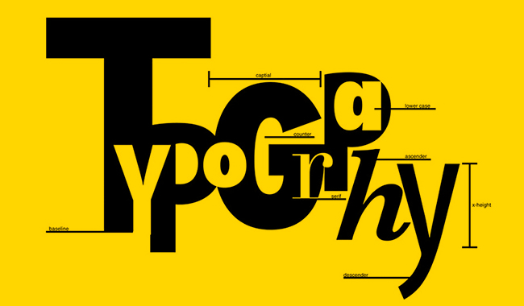

Типографіка в дизайні
- Основні положення
- Кегль
- Трекінг і кернінг
- Х-висота
- Інтерліньяж та міжрядковий інтервал
- Головні правила типографіки
- Ряди розмірів
- Заголовок
- Абзац
- Список
- Вирівнювання
- Ширина рядка
- Нерозривний пробіл
- Різновиди тире
- Різновиди лапок
- Колір
- Кнопки дій
- CAPS — не завжди добре
- Найголовніше